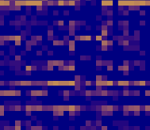
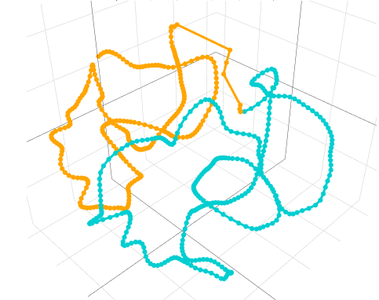

|
|
DBMS
This package is a generalization of the PoisMS package.
It computes 3D chromatin reconstruction using a general probabilistic model for the elements of the contact matrix.
The current version of the library includes Poisson, zero-inflated Poisson, Hurdle Poisson, and negative binomial distributions.
Two smoothing techniques are available: via controlling the basis of the reconstruction (e.g. using the B-spline basis for the reconstruction) or via controlling the roughness of the resulting curve (i.e. employing the smoothing spline idea).
[Github link]
|
|
 |
WLRMA
This package performs weighted low-rank matrix approximation. It allows for solving a rank-constraint problem as well as
its convex relaxation with the nuclear-norm constraint. The baseline optimization procedure is based on the proximal gradient descent.
Two acceleration techniques are available: Nesterov and Anderson.
For high-dimensional matrices the implementation based on the weighted alternating least squares is available.
[Github link]
|
|
|
RCCA
This package includes the implementation of regularized canonical correlation analysis with structured data.
Canonical correlation analysis (CCA) is a technique for measuring the association between two multivariate data matrices.
Regularized canonical correlation analysis is a modification of CCA that imposes a penalty on the CCA coefficients.
It is useful for high-dimensional data settings as it allows controlling the sparsity of the CCA coefficients.
In this package, we implement three approaches to regularizing CCA: with standard L2 penalty (RCCA), with partial L2 penalty (PRCCA), and with a group penalty (GRCCA).
[Github link]
|
|
 |
PoisMS
This package allows for computing the chromatin reconstruction from a contact matrix.
There are three methods in this package, all of them model chromatin directly by a smooth curve.
The baseline method, principal curve metric scaling (PCMS), is inspired by classical multidimensional scaling.
Weighted principal curve metric scaling (WPCMS) is a weighted generalization of the PCMS technique that allows controlling the influence of particular elements of the contact matrix on the resulting reconstruction.
The Poisson metric scaling (PoisMS) method is based on a Poisson model for the contact counts.
[Github link] [Vignette]
|
|